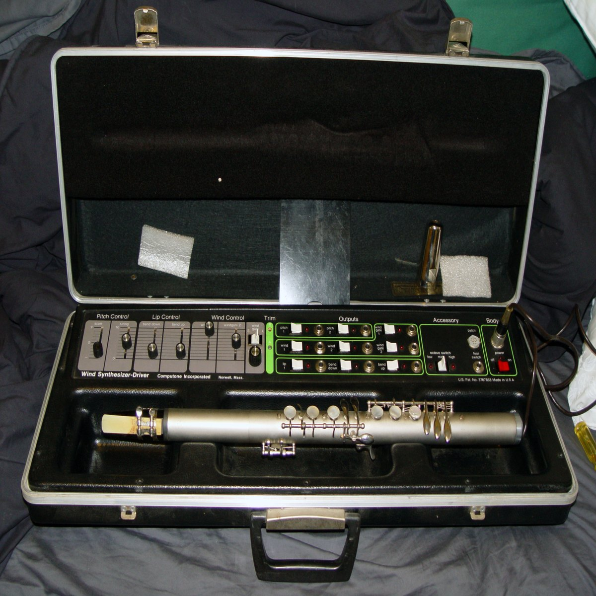
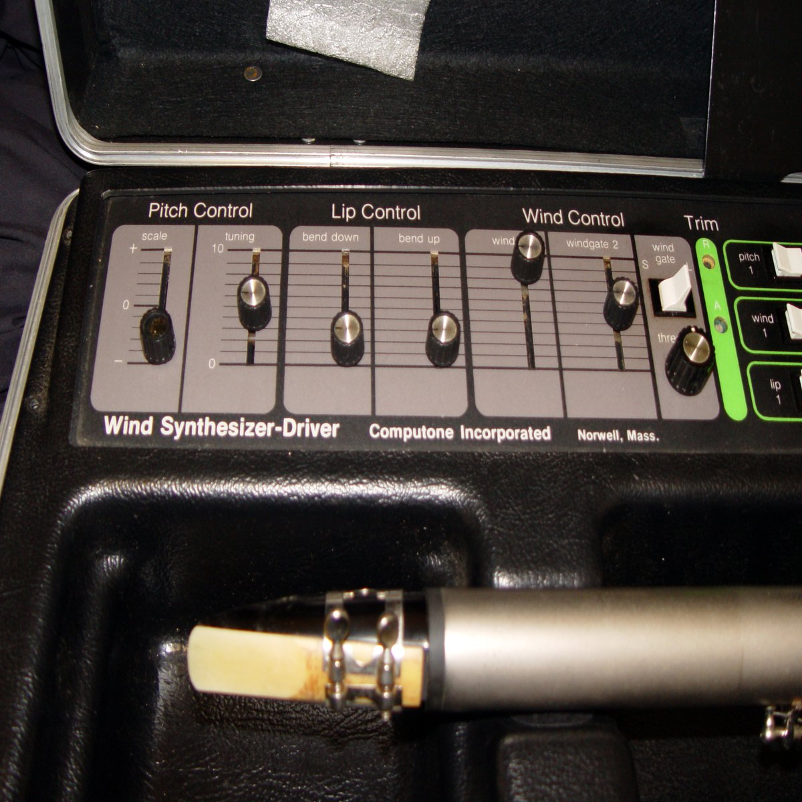
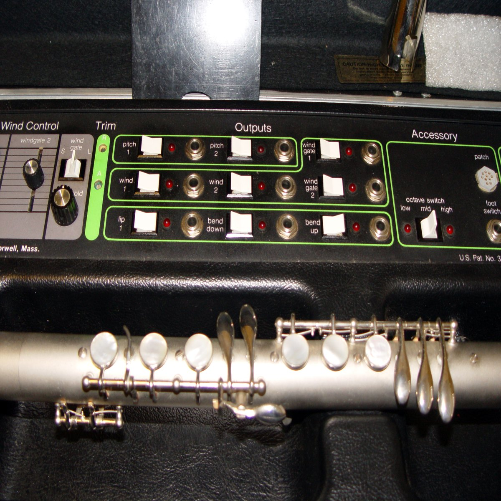

1977
Computone Inc. (Massachusetts) — Bill Bernardi (inventor), Roger Noble (co-engineer)
Lyricon / Wind Synthesizer Driver
The first electronic wind controller, where blowing a light beam makes an analog voltage

Overview
Deep dive
Team & pioneers
- Bill Bernardi. Inventor of the Lyricon, filed patent US3767833 (filed 1971, granted 1973).
- Roger Noble. Co-engineer on the Lyricon.
- Computone Inc. Massachusetts-based manufacturer, produced ~200 units from 1974 to 1980.
Media

